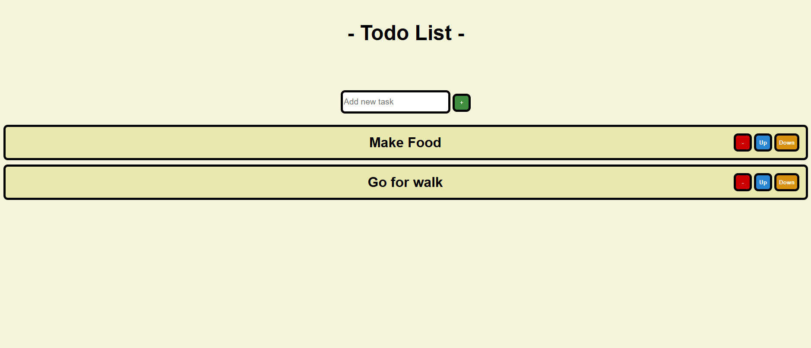

<!DOCTYPE html>
<html>
    <head>
        <meta charset="utf-8">
        <meta name="viewport" content="width=device-width, initial-scale=1.0">
        <title>Iulian Boariu</title>
        <link href='https://fonts.googleapis.com/css?family=Inter' rel='stylesheet'>
        <link href="https://cdn.jsdelivr.net/npm/bootstrap@5.3.3/dist/css/bootstrap.min.css" rel="stylesheet" integrity="sha384-QWTKZyjpPEjISv5WaRU9OFeRpok6YctnYmDr5pNlyT2bRjXh0JMhjY6hW+ALEwIH" crossorigin="anonymous">
        <script src="https://cdn.jsdelivr.net/npm/bootstrap@5.3.3/dist/js/bootstrap.bundle.min.js" integrity="sha384-YvpcrYf0tY3lHB60NNkmXc5s9fDVZLESaAA55NDzOxhy9GkcIdslK1eN7N6jIeHz" crossorigin="anonymous"></script>
        <link rel="stylesheet" href="./style_5.css">
    </head>
</html>

<body>
    <section class="navbar_sect">
        <nav class="navbar navbar-expand-lg bg-body-tertiary navbar-light fixed-top">
          <div class="container-fluid">
            <a class="navbar-brand" href="main.html">Back to Portfolio</a>
          </div>
        </nav>
    </section>

    <section class="proj_desc">
      <div class="px-4 py-5 my-5 text-center">
        <h1 class="proj_title">Todo-List</h1>
        <div class="language">
          <span class="html">HTML</span>
          <span class="css">CSS</span>
          <span class="react">React</span>
        </div>
        
        <h1 class="overview">Overview</h1>
        <div class="container">
          <p class="desc">Users can add a number of everyday tasks to a list, as well as being able to move them up or down 
            the list if their priority changes. Tasks can be deleted from the list if needed.
        </p>
        </div>
        <h1 class="features">Features</h1>
        <div class="container">
          <ul class="desc">
            <li><span>Add : </span>Users can upload as many tasks as they want</li>
            <li><span>Delete : </span>Tasks can be deleted from lists</li>
            <li><span>Move : </span>Tasks can be moved up or down the list.</li>
          </ul>
        </div>
        <h1 class="github">GitHub</h1>
        <div class="container">
          <a href="https://github.com/iulCode78/Projects/tree/main/Todo-List-App/todo-list-app" style="text-decoration: none; color: inherit;">
          <p class="git_button">View</p>
          </a>
        </div>
      </div>
    </section>

    <section class="footer" id="foot">
      <footer>
        <p class="footer_text">© 2025 Iulian Boariu</p>
        <p class="footer_text">All rights reserved</p>
      </footer>
    </section>
</body>